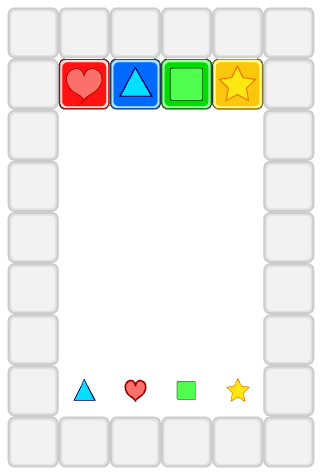
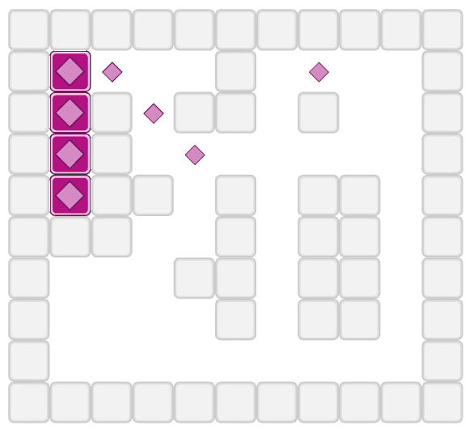

1. Skúška 21.1.2026 - Cubilus Game¶
Cubilus Game je hra pre jedného hráča, ktorého cieľom je presúvať v štvorcovej sieti všetky farebné kvádre tak, aby sa každý kváder dostal na cieľové políčko rovnakej farby. Napríklad (hracia plocha pre 'subor1.txt' a 'subor5.txt':
{kind=link}

{kind=link}

Jednotlivé kvádre môžeme presúvať pomocou šípok, budeme ich označovať písmenami 'l' vľavo, 'p' vpravo, 'h' hore, 'd' dole tak, že kváder sa po zatlačení šípky presúva daným smerom automaticky - až po prvú prekážku, ktorou je okraj plochy, stena alebo iný kváder. Cieľové políčka nie sú pre pohyb kvádra prekážkou.
Cieľom programu je odkontrolovať, kam sa hráč po zadanej postupnosti kvádrov a šípok dostane, ktoré kvádre kam presunie a koľko z nich je na cieľových pozíciách rovnakej farby.
Textový súbor popisuje hraciu plochu ako sériu riadkov plochy. Tieto riadky zodpovedajú riadkom štvorcovej siete (všetky sú rovnako dlhé) pričom obsahujú tieto znaky:
'#'sú políčka steny'.'sú voľné políčkaod
'A'po'Z'sú políčka, na ktorých sú kvádreod
'a'po'z'sú cieľové políčka - tieto sú pre kvádre voľné, teda normálne priechodnékaždé písmeno reprezentuje jednu farbu: napríklad pre kváder
'A'bude zodpovedajúcim cieľovým políčkom'a'kvádrov jednej farby môže byť aj viac a zrejme rovnaký počet bude aj zodpovedajúcich cieľových políčok
za popisom hracej plochy môžu nasledovať riadky s ďalšími informáciami o kvádroch a cieľových políčkach:
v každom takomto riadku sú dve celé čísla, za ktorými nasleduje jeden znak
čísla označujú číslo riadku a číslo stĺpca (číslujeme od
0) a znak označuje, buď kváder (veľké písmeno), cieľové políčko (malé písmeno) alebo znak'.'označuje, že toto políčko už nie je cieľové
Môžeš predpokladať, že súbor je zadaný korektne.
Riešenie zapíš do triedy Cubilus s týmito metódami:
class Cubilus:
def __init__(self, meno_suboru):
...
def __setitem__(self, pozicia, znak):
...
def __repr__(self):
return ''
def ktore(self):
...
def posun(self, pozicia, prikazy):
...
kde
metóda
__init__(meno_suboru)- prečíta textový súbor celej plochy s kvádrami a cieľovými políčkamimetóda
__setitem__(pozicia, znak)- zmení zadané políčko v ploche (poziciaje dvojica celých čísel(riadok, stĺpec)), rovnako ako v časti ďalšie informácie vo vstupnom súboremetóda
__repr__()- vráti viacriadkový znakový reťazec, ktorý reprezentuje momentálny stav hracej plochyzrejme, keď kváder stojí na nejakom cieľovom políčku, tak sa vo výpise zobrazuje len kváder
metóda
posun(pozicia, prikazy)- kde parameterpoziciaoznačuje kváder (ako dvojicu(riadok, stĺpec)), s ktorým sa bude hýbať aprikazyje znakový reťazec s postupnosťou príkazov, teda stláčaných šípok (označujeme ich znakmi'l','p','h','d') – označený kváder sa v ploche pohybuje podľa takto zadaných príkazovak na danej pozícii nie je žiaden kváder, metóda nerobí nič
metóda vráti celkový počet prejdených krokov pre všetky príkazy v postupnosti
prikazy
metóda
ktore()- vráti zoznam (typlist) písmen (v ľubovoľnom poradí), ktoré reprezentujú farebné kvádre, ktoré sú na správnych cieľových políčkachak sú v zozname všetky kvádre, metóda namiesto zoznamu písmen vráti reťazec
'OK'
Napríklad, pre 'subor1.txt':
######
#AB.D#
#....#
#....#
#....#
#....#
#....#
#ba.d#
######
1 3 C
7 3 c
takýto test:
if __name__ == '__main__':
c = Cubilus('subor1.txt')
print(c)
print(f'{c.ktore() = }')
print(f'{c.posun((1, 3), 'd') = }')
print(f'{c.posun((1, 1), 'dp') = }')
print(c)
print(f'{c.ktore() = }')
print(f'{c.posun((1, 2), 'dld') = }')
print(f'{c.posun((1, 4), 'dlp') = }')
print(c)
print(f'{c.ktore() = }')
vypíše:
######
#ABCD#
#....#
#....#
#....#
#....#
#....#
#bacd#
######
c.ktore() = []
c.posun((1, 3), 'd') = 6
c.posun((1, 1), 'dp') = 7
######
#.B.D#
#....#
#....#
#....#
#....#
#....#
#bACd#
######
c.ktore() = ['C', 'A']
c.posun((1, 2), 'dld') = 7
c.posun((1, 4), 'dlp') = 6
######
#....#
#....#
#....#
#....#
#....#
#....#
#BACD#
######
c.ktore() = 'OK'
Môžeš si stiahnuť 1sk_1.zip s testovacími súbormi 'subor1.txt', 'subor2.txt', 'subor3.txt', …, ktoré používa testovač.
Tvoj odovzdaný program musí začínať tromi riadkami komentárov:
# 1. skuska: cubilus
# student: Janko Hrasko
# datum: 21.1.2026